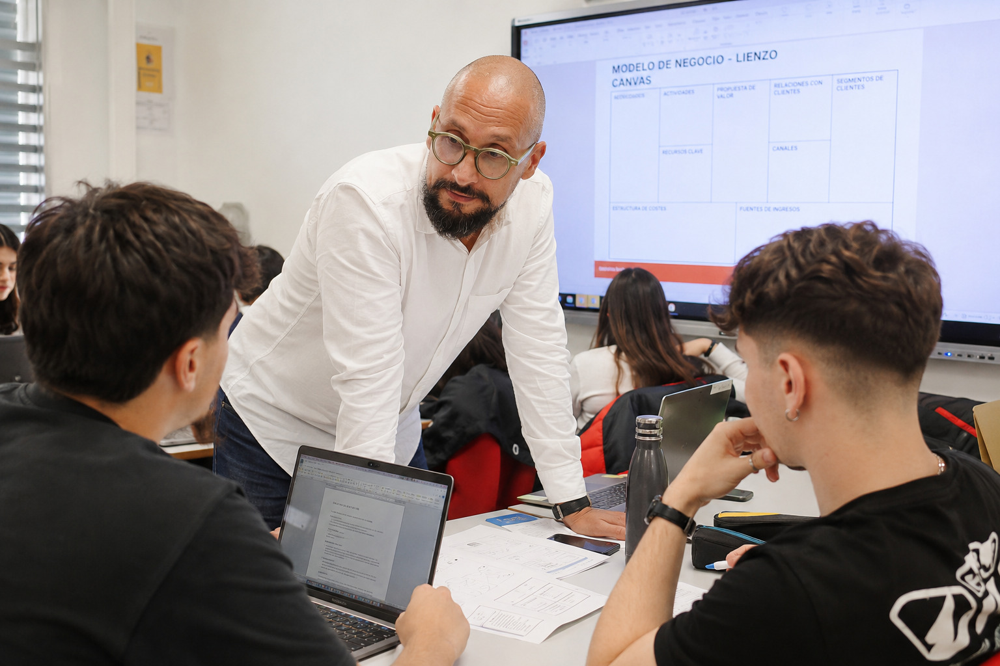

Dieciocho años en empresa —comercial, director comercial, distintos sectores— hasta que me llamaron para colaborar en Código Escuela 4.0. No lo tenía planeado. Lo probé, y en esas aulas encontré algo que no sabía que me faltaba. Desde entonces me he formado para hacerlo bien: MAES habilitado, especialidad Economía, Empresa y Turismo.

Integración real en el claustro, compromiso con el proyecto educativo y rigor en la gestión docente del día a día.
Presencia educativa
Haz clic en cualquier punto para ver el centro. Datos reales del programa Código Escuela 4.0 · Consejería de Educación de la Región de Murcia.
En el aula
Metodología aplicada en el aula: proyectos auténticos, aprendizaje activo y tecnología educativa en contexto real. El alumnado crea, decide y presenta ante audiencias reales.
Soy docente de FP, ESO y Bachillerato habilitado (MAES, especialidad Economía, Empresa y Turismo, junio 2026). Imparto Empresa, EIE, Economía y Marketing. Pero antes de ser docente fui comercial, director comercial en el sector financiero —del que me fui cuando mis principios y la forma de trabajar de ese entorno dejaron de ser compatibles— y después trabajé en sitios muy distintos hasta que llegué a la enseñanza casi sin buscarlo.
Esa trayectoria no es el adorno del CV. Es lo que hace diferente lo que pasa en mi aula. Cuando explico qué es una cartera de clientes, lo explico desde dentro. Cuando hablo de toma de decisiones, de ética empresarial, de por qué fracasan los negocios, no estoy leyendo un caso práctico. Estoy contando algo que viví. Un alumno de FP que aprende empresa de alguien que ha gestionado empresas reales aprende diferente. Lo nota.
También fui tartamudo de pequeño. Lo cuento porque explica por qué tardé tanto en plantearme enseñar, y porque la forma en que lo resolví —buscando sinónimos, aprendiendo a ir más despacio cuando el cerebro va más rápido que la boca— es exactamente el tipo de gestión personal que intento transmitir en el aula.
Una sesión real
Selecciona el tipo de sesión y haz clic en cada momento para ver qué ocurre exactamente.
La metodología se adapta al grupo, al módulo y al momento: el alumnado aprende haciendo, no memorizando. Siempre dentro del marco curricular y la programación del departamento.
Cuando el grupo muestra apatía, rompo la inercia con dinámicas de impacto inmediato y herramientas digitales que fomentan la participación anónima inicial para ganar confianza.
En aulas heterogéneas, aplico el Diseño Universal para el Aprendizaje (DUA), ofreciendo diferentes vías de entrada al contenido y múltiples formas de expresar lo aprendido.
Para conceptos abstractos de empresa o economía, aterrizamos la teoría en un proyecto real (ABP) donde el alumnado "hace" para "entender", conectando con su realidad.
Portfolio
Proyectos curriculares reales: el alumnado diseña, desarrolla y defiende sus trabajos en situaciones que simulan entornos profesionales reales.
El alumnado constituye y gestiona una empresa ficticia desde cero: toma decisiones reales de negocio, resuelve conflictos internos y defiende los resultados ante el grupo.
Los equipos defienden su propuesta de valor en 5 minutos ante una audiencia técnica o potenciales colaboradores.
Producción de contenido audiovisual para canales digitales usando IA generativa, con enfoque de uso ético, crítico y productivo.
Redacción y formalización de la documentación interna oficial de la empresa simulada, con rigor administrativo y comunicación escrita profesional.
Evidencia de dominio curricular avanzado: desarrollo de una herramienta de diagnóstico y gestión basada en el currículo oficial de FP, la normativa LOMLOE y la Ley Orgánica 3/2022.
Herramienta propia de diagnóstico curricular construida sobre los Reales Decretos de título de FP, los RA y CE oficiales y el marco LOMLOE.
ProyectoFP nació de un problema concreto de trabajo docente: verificar que cada Resultado de Aprendizaje y Criterio de Evaluación de un módulo tiene cobertura real en la programación didáctica. Construirlo ha requerido trabajar en profundidad con los Reales Decretos de títulos de FP, la estructura de RA y CE de cada módulo y las exigencias de trazabilidad curricular de la LOMLOE.
ProyectoFP es una herramienta de apoyo al trabajo curricular del docente de FP. Permite generar situaciones de aprendizaje, rúbricas analíticas, programaciones didácticas y casos prácticos directamente desde el currículo oficial de cada módulo, y verificar que la cobertura de Resultados de Aprendizaje y Criterios de Evaluación es coherente y defendible ante cualquier revisión educativa.
Ha sido construida con conocimiento directo del marco normativo de la FP española: LOMLOE, Ley Orgánica 3/2022, Reales Decretos de títulos de FP e instrucciones de la Consejería de Educación de la Región de Murcia.
Disponible para incorporación en centros de FP, ESO y Bachillerato en la Región de Murcia. Si lo que has leído te genera alguna pregunta o crees que puede haber encaje con tu proyecto educativo, escríbeme directamente. Prefiero una conversación real a un formulario.
hola@juanpeco.com